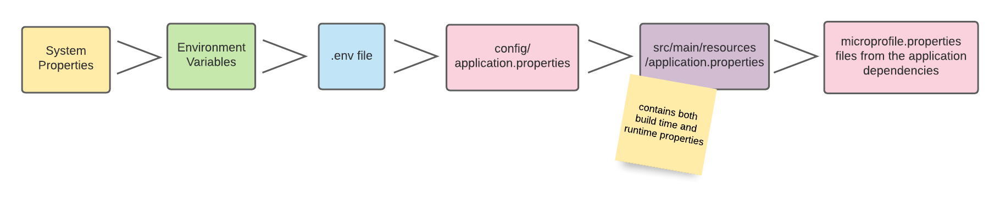

設定リファレンスガイド
このリファレンスガイドでは、 Quarkus の設定に関するさまざまな側面を説明します。 Quarkus アプリケーションおよび Quarkus 自体 (コアおよびエクステンション) は、 MicroProfile Config 仕様の実装である SmallRye Config API を活用した、同じメカニズムを介して設定されます。
| Quarkus エクステンションを設定可能にする方法についての情報をお探しの場合は、 Writing Your Own Extension ガイドを参照してください。 |
1. 設定ソース
デフォルトでは、 Quarkus は複数のソースから (序数の降順で) 設定プロパティーを読み取ります。
-
(400) システムプロパティー
-
(300) 環境変数
-
(295) カレントワーキングディレクトリ内の .env ファイル
-
(260)
$PWD/config/application.propertiesにある Quarkus アプリケーション設定ファイル -
(250) クラスパス内の Quarkus アプリケーション設定ファイル
application.properties -
(100) クラスパス内の MicroProfile Config 設定ファイル
META-INF/microprofile-config.properties
最終的な設定は、これらすべてのソースで定義されたプロパティーを集約したものになります。設定プロパティーの検索は、利用可能な最も高い序数の設定ソースから開始され、一致するものが見つかるまで他のソースへと順に下がっていきます。つまり、より高い序数の設定ソースで異なる値を設定するだけで、任意の設定プロパティーの値を上書きできることを意味します。例えば、環境プロパティーを使用して設定されたプロパティーは、 application.properties ファイルを使用して提供された値を上書きします。

1.1. システムプロパティー
システムプロパティーは、起動時に -D フラグを介してアプリケーションに渡すことができます。以下の例では、属性 quarkus.datasource.password に値 youshallnotpass を割り当てています。
-
Quarkus 開発モードの場合:
./mvnw quarkus:dev -Dquarkus.datasource.password=youshallnotpass -
ランナー jar の場合:
java -Dquarkus.datasource.password=youshallnotpass -jar target/quarkus-app/quarkus-run.jar -
実行可能ファイルの場合:
./target/myapp-runner -Dquarkus.datasource.password=youshallnotpass
1.2. 環境変数
-
ランナー jar の場合:
export QUARKUS_DATASOURCE_PASSWORD=youshallnotpass ; java -jar target/quarkus-app/quarkus-run.jar -
実行可能ファイルの場合:
export QUARKUS_DATASOURCE_PASSWORD=youshallnotpass ; ./target/myapp-runner
環境変数名は、 MicroProfile Config で指定された変換ルールに従います。設定システムは、指定されたプロパティー名 (例: foo.BAR.baz) に対して 3 つの環境変数を検索します。
-
foo.BAR.baz- 完全一致 -
foo_BAR_baz- 英数字でも_でもない各文字を_に置換 -
FOO_BAR_BAZ- 英数字でも_でもない各文字を_に置換し、名前を大文字に変換
SmallRye Config は 追加の変換ルール を指定しています。
-
二重引用符を含むプロパティー
foo."bar".bazの場合、英数字でも_でもない各文字を_に置換:FOO__BAR__BAZ -
ダッシュを含むプロパティー
foo.bar-bazの場合、英数字でも_でもない各文字を_に置換:FOO_BAR_BAZ -
インデックス付きプロパティー
foo.bar[0]またはfoo.bar[0].bazの場合、英数字でも_でもない各文字を_に置換:FOO_BAR_0_またはFOO_BAR_0__BAZ
|
状況によっては、正確なプロパティー名を検索できないことがあります。これは、ユーザー定義のパスセグメントを含む設定名の場合です。 環境変数名の変換ルールを適用すると、
このため、このようなプロパティーでは、環境変数名を明確にするために、別のソースでドット区切りのバージョン名が常に必要になります。これにより、双方向の変換を実行し、プロパティー名を互いに一致させるための追加情報が提供されます。 |
1.3. 現在の作業ディレクトリー内の .env ファイル
QUARKUS_DATASOURCE_PASSWORD=youshallnotpass (1)| 1 | QUARKUS_DATASOURCE_PASSWORD という名前は、 環境変数 で使用されるものと同じ変換ルールに従います。 |
dev モードの場合、このファイルはプロジェクトのルートに配置できますが、通常はパスワード、アクセストークン、 API キー、その他の機密情報が含まれるため、バージョン管理に チェックインしない ことをお勧めします。
.env ファイル内の環境変数は、 System.getenv(String) API を介して取得することはできません。
|
1.4. Quarkus アプリケーション設定ファイル
Quarkus アプリケーション設定ファイルは、クラスパスリソース (例: src/main/resources/application.properties 、 src/test/resources/application.properties) 、または application.properties エントリーを含む jar 依存関係からロードされます。見つかった各 application.properties は個別の ConfigSource として扱われ、他のすべてのソースと同じルール (プロパティーごとの上書き) に従います。さらに、設定ファイルは $PWD/config/application.properties に置くこともできます。ロードは config フォルダーから開始され、次にクラスパスの順序で行われます (アプリケーションソース内の application.properties ファイルは、クラスローダーのロード順序において優先されます)。
application.propertiesgreeting.message=hello (1)
quarkus.http.port=9090 (2)| 1 | これはユーザー定義の設定プロパティーです。 |
| 2 | これは quarkus-vertx-http エクステンションによって消費される設定プロパティーです。 |
config/application.properties は、 dev モードでも利用可能です。ファイルはビルドツールの出力ディレクトリー (Maven の場合は target 、 Gradle の場合は build/classes/java/main) 内に配置する必要があります。ただし、 mvn clean や gradle clean などのビルドツールのクリーン操作を行うと、 config ディレクトリーも削除されることに注意してください。
|
1.5. MicroProfile Config 設定ファイル
src/main/resources/META-INF/microprofile-config.properties にある MicroProfile Config 設定ファイルです。
microprofile-config.propertiesgreeting.message=hello (1)
quarkus.http.port=9090 (2)| 1 | これはユーザー定義の設定プロパティーです。 |
| 2 | これは quarkus-vertx-http エクステンションによって消費される設定プロパティーです。 |
これは Quarkus アプリケーション設定ファイル application.properties とまったく同じように動作します。推奨されるのは、 Quarkus の application.properties を使用することです。
|
1.6. ロケーション
デフォルトの設定ロケーションに加えて、 Quarkus は設定プロパティーファイルの追加ロケーションをスキャンする方法を提供します。
quarkus.config.locations 設定プロパティーは、カンマ , で区切られた複数のロケーションを受け入れ、それぞれが有効な URI を表している必要があります。サポートされている URI スキームは以下の通りです。
-
ファイルまたはディレクトリ (
file:) -
クラスパスリソース
-
jar リソース (
jar:) -
http リソース (
http:)
ロードされたすべてのソースは、 quarkus.config.locations 設定プロパティーを見つけたソースと同じ序数を使用します。例えば、 quarkus.config.locations がシステムプロパティーとして設定されている場合、ロードされたすべてのソースの序数は 400 に設定されます (システムプロパティーは序数として 400 を使用します)。序数は、 config_ordinal プロパティーと序数値を設定することで、各設定ソースに対して直接上書きできます。 config_ordinal プロパティーは、それが設定されているソースの序数にのみ影響します。ソースは、まず序数によってソートされ、次にロケーションの順序、最後にロード順序によってソートされます。
2. ConfigMapping
Quarkus アプリケーションに設定を公開するための推奨される方法は、インターフェースでマッピングすることです。 SmallRye Config Mappings を使用すると、同じプレフィックス (または名前空間) を共有する複数の設定プロパティーを単一のインターフェースにグループ化できます。以下の機能セットをサポートしています。
-
List、 Set、 Map、 Optional、およびプリミティブ型を含む、設定型の自動変換。
-
ネストされた設定マッピンググループ。
-
設定プロパティーの命名戦略
-
Bean Validation との統合
設定マッピングには、 @io.smallrye.config.ConfigMapping アノテーションが付与された最小限のメタデータ設定を持つインターフェースが必要です。
@ConfigMapping(prefix = "server")
public interface Server {
String host();
int port();
int sslPort();
}複雑なオブジェクト型は、以下のルールを使用して設定値をメンバーの値にマッピングします。
-
設定パスは、オブジェクト型のプレフィックス (または名前空間) とマッピングメンバー名を取得して構築されます。
-
メンバー名はケバブケース (kebab-case) 形式に変換されます。
-
メンバー名がゲッターとして表現されている場合、メンバー名はそのプロパティー名に相当するものから取得され、ケバブケース形式に変換されます。
-
設定値は自動的にメンバー型に変換されます。
-
設定パスには有効な設定値が存在する必要があります。存在しない場合、マッピングは失敗します。
| Kebab-case - メソッド名は、設定プロパティーをマッピングするために、大文字と小文字の変化をダッシュに置き換えることで派生します。 |
Server インターフェースは、 server.host という名前の設定プロパティーを Server.host() メソッドに、 server.port を Server.port() メソッドに、 server.ssl-port を Server.sslPort() メソッドにマッピングできます。検索対象の設定プロパティー名は、プレフィックスとメソッド名 (ケバブケース) をドット (.) 文字で区切って構築されます。
@ConfigMapping は、任意の CDI 対応 Bean にインジェクトできます。
@ApplicationScoped
class BusinessBean {
@Inject
Server server;
void businessMethod() {
String host = server.host();
}
}非 CDI コンポーネントの場合は、 io.smallrye.config.SmallRyeConfig#getConfigMapping API を使用して設定マッピングインスタンスを取得します。
SmallRyeConfig config = ConfigProvider.getConfig().unwrap(SmallRyeConfig.class);
Server server = config.getConfigMapping(Server.class);
@ConfigMapping を使用した高度な用法については、 オブジェクトへの設定のマッピング ガイドを確認してください。
|
3. ConfigProperty
@ConfigMapping が推奨されるアプローチですが、 Quarkus はアプリケーションに設定プロパティーをインジェクトするための MicroProfile Config アノテーションもサポートしています。
@ConfigProperty(name = "greeting.message") (1)
String message;| 1 | @Inject @ConfigProperty または単に @ConfigProperty を使用できます。 @ConfigProperty が付与されたメンバーには、 @Inject アノテーションは必要ありません。 |
| 設定されていない設定プロパティーをアプリケーションがインジェクトしようとすると、エラーがスローされます。 |
@ConfigProperty(name = "greeting.message") (1)
String message;
@ConfigProperty(name = "greeting.suffix", defaultValue="!") (2)
String suffix;
@ConfigProperty(name = "greeting.name")
Optional<String> name; (3)| 1 | このプロパティーに値を提供しない場合、アプリケーションの起動は io.quarkus.runtime.configuration.ConfigurationException: Failed to load config value of type class java.lang.String for: greeting.messagee で失敗します。 |
| 2 | 設定で greeting.suffix の値が提供されない場合は、デフォルト値がインジェクトされます。 |
| 3 | このプロパティーはオプションです。設定で greeting.name の値が提供されない場合は、空の Optional がインジェクトされます。 |
| 類似した設定プロパティーをグループ化するには、 設定マッピング を使用してください。 |
4. デフォルト値
設定に (io.smallrye.config.WithDefault または org.eclipse.microprofile.config.inject.ConfigProperty.defaultValue によって) デフォルト値が関連付けられており、プロパティーに設定値が提供されていない場合、例外をスローするのではなく、デフォルト値が使用されます。デフォルト値は String として表現され、設定値の処理に使用されるのと同じ変換メカニズムを使用します。プリミティブ、ボックス化されたプリミティブ、およびその他のクラス向けに、いくつかの組み込みコンバーターが既に存在します。例:
-
プリミティブ:
boolean、byte、shortなど。 -
ボックス化されたプリミティブ:
java.lang.Boolean、java.lang.Byte、java.lang.Shortなど。 -
Optional コンテナー:
java.util.Optional、java.util.OptionalInt、java.util.OptionalLong、およびjava.util.OptionalDouble -
Java
enum型 -
JSR 310
java.time.Duration -
JDK ネットワーキング
java.net.SocketAddress、java.net.InetAddressなど。
予想通り、これらのコンバーターは org.eclipse.microprofile.config.spi.Converter の実装です。したがって、これらのコンバーターは、以下のような Microprofile またはカスタム実装プロバイダーの表現ルールに準拠します。
-
Boolean 値は、 "true" 、 "1" 、 "YES" 、 "Y" 、 "ON" の場合に
trueになります。それ以外の場合、値は false と解釈されます。 -
float および double 値の場合、小数点以下はドット
.で区切る必要があります。
Optional* 型とデフォルト値を組み合わせて使用する場合、定義されたデフォルト値が引き続き使用されます。プロパティーに値が指定されていない場合、 Optional* が存在し、変換されたデフォルト値が入力されます。ただし、プロパティーが明示的に空の場合、デフォルト値は使用されず、 Optional は空になります。以下の例を考えてみましょう。
# missing value, optional property
greeting.name=この場合、上記の greeting.name は Optional* に設定されているため、対応するプロパティー値は空の Optional となり、実行は通常通り継続されます。これは、デフォルト値が設定されていたとしても同様です。設定でプロパティーが明示的にクリアされている場合、デフォルト値は使用され ません 。
一方で、この例では:
# missing value, non-optional
greeting.suffix=起動時に java.util.NoSuchElementException: SRCFG02004: Required property greeting.message not found が発生し、デフォルト値は割り当てられません。
5. プログラムによるアクセス
io.smallrye.config.SmallRyeConfig API を使用すると、プログラムで設定 API にアクセスできます。この API は、主に CDI インジェクションが利用できない状況で役立ちます。
SmallRyeConfig config = org.eclipse.microprofile.config.ConfigProvider.getConfig().unwrap(SmallRyeConfig.class);
String databaseName = config.getValue("database.name", String.class);
Optional<String> maybeDatabaseName = config.getOptionalValue("database.name", String.class);
設定値を取得するために System.getProperty(String) や System.getEnv(String) を使用しないでください。これらの API は設定を認識せず、このガイドで説明されている機能をサポートしていません。
|
6. プロファイル
ターゲットとなる 環境 に応じて、アプリケーションを異なる方法で設定する必要があることがよくあります。例えば、ローカルの開発環境は本番環境とは異なる場合があります。
設定プロファイルを使用すると、同じファイルまたは個別のファイルに複数の設定を持たせ、プロファイル名によってそれらを選択することができます。
6.1. プロパティー名に含まれるプロファイル
同じ名前のプロパティーを設定できるようにするには、各プロパティーの前にパーセント記号 % 、プロファイル名、ドット . を付けた %{profile-name}.config.name という構文を使用する必要があります。
quarkus.http.port=9090
%dev.quarkus.http.port=8181Quarkus の HTTP ポートは 9090 になります。 dev プロファイルがアクティブな場合は 8181 になります。
.env ファイル内のプロファイルは、 _{PROFILE}_CONFIG_KEY=value という構文に従います。
QUARKUS_HTTP_PORT=9090
_DEV_QUARKUS_HTTP_PORT=8181プロファイルが特定の属性の値を定義していない場合は、 デフォルト (プロファイルなし) の値が使用されます。
bar=”hello”
baz=”bonjour”
%dev.bar=”hallo”dev プロファイルが有効な場合、プロパティー bar の値は hallo ですが、プロパティー baz の値は bonjour です。 prod プロファイルが有効な場合、 bar の値は (prod プロファイル専用の値がないため) hello になり、 baz の値は bonjour になります。
6.2. デフォルトプロファイル
デフォルトでは、 Quarkus は特定の条件下で自動的にアクティブ化される 3 つのプロファイルを提供します。
-
dev - 開発モード (例:
quarkus:dev) のときにアクティブ化されます -
test - テスト実行時にアクティブ化されます
-
prod - 開発モードまたはテストモードで実行されていないときのデフォルトプロファイルです
6.3. カスタムプロファイル
追加のプロファイルを作成し、 quarkus.profile 設定プロパティーを使用してそれらをアクティブ化することも可能です。新しいプロファイル名を持つ単一の設定プロパティーだけで十分です。
quarkus.http.port=9090
%staging.quarkus.http.port=9999quarkus.profile を staging に設定すると、 staging プロファイルがアクティブになります。
|
|
6.4. プロファイル対応ファイル
この場合、特定のプロファイル用のプロパティーは application-{profile}.properties という名前のファイルに置くことができます。前の例は次のように表現できます。
quarkus.http.port=9090
%staging.quarkus.http.test-port=9091quarkus.http.port=9190
quarkus.http.test-port=9191|
このスタイルでは、プロファイル対応ファイル内の設定名にプロファイル名のプレフィックスを付ける必要はありません。 プロファイル対応ファイル内のプロパティーは、メインファイルで定義されたプロファイル対応プロパティーよりも優先されます。 |
|
|
|
ファイルのロード時に一貫した順序を確保するために、プロファイル対応 ( |
6.5. 親プロファイル
親プロファイルは、現在のプロファイルに 1 つの階層レベルを追加します。設定 quarkus.config.profile.parent は、単一のプロファイル名を受け入れます。
親プロファイルがアクティブな場合、現在のプロファイルでプロパティーが見つからないと、設定の検索は親プロファイルにフォールバックします。以下を考えてみましょう。
quarkus.profile=dev
quarkus.config.profile.parent=common
%common.quarkus.http.port=9090
%dev.quarkus.http.ssl-port=9443
quarkus.http.port=8080
quarkus.http.ssl-port=8443その場合
-
アクティブなプロファイルは
devです -
親プロファイルは
commonです -
quarkus.http.portは 9090 になります -
quarkus.http.ssl-portは 9443 になります
|
|
6.6. 複数プロファイル
複数のプロファイルを同時にアクティブにすることができます。設定 quarkus.profile は、カンマ区切りのプロファイル名リストを受け入れます。例: quarkus.profile=common,dev。 common と dev はそれぞれ独立したプロファイルです。
複数のプロファイルがアクティブな場合、プロファイル設定のルールは同じです。2 つのプロファイルが同じ設定を定義している場合、最後にリストされたプロファイルが優先されます。以下を考えてみましょう。
quarkus.profile=common,dev
my.prop=1234
%common.my.prop=1234
%dev.my.prop=5678
%common.commom.prop=common
%dev.dev.prop=dev
%test.test.prop=testその場合
-
common.propの値はcommonです -
dev.propの値はdevです -
my.propの値は5678です -
test.propはvalueを持ちません
カンマ区切りのプロファイル名リストを使用して、複数のプロファイルプロパティーを定義することも可能です。同じプロパティー名が複数のプロファイルプロパティーに存在する場合、最も具体的なプロファイルを持つプロパティー名が優先されます。
quarkus.profile=dev
%prod,dev.my.prop=1234
%dev.my.prop=5678
%prod,dev.another.prop=1234その場合
-
my.propの値は 5678 です。 -
another.propの値は 1234 です。
|
複数プロファイルの優先順位は逆順に動作します。 |
7. プロパティー式
Quarkus は、設定値に対するプロパティー式の展開を提供します。式文字列は、プレーンな文字列と、 ${ … } というシーケンスで囲まれた式セグメントの混合です。
これらの式は、プロパティーが読み取られるときに解決されます。したがって、設定プロパティーがビルド時のものである場合、プロパティー式はビルド時に解決されます。設定プロパティーが実行時に上書き可能な場合は、実行時に解決されます。
以下を考えてみましょう。
remote.host=quarkus.io
callable.url=https://${remote.host}/callable.url プロパティーの解決された値は https://quarkus.io/ です。
別の例として、プロファイルごとに異なるデータベースサーバーを定義する場合:
%dev.quarkus.datasource.jdbc.url=jdbc:mysql://localhost:3306/mydatabase?useSSL=false
quarkus.datasource.jdbc.url=jdbc:mysql://remotehost:3306/mydatabase?useSSL=false次のように簡略化できます。
%dev.application.server=localhost
application.server=remotehost
quarkus.datasource.jdbc.url=jdbc:mysql://${application.server}:3306/mydatabase?useSSL=falseさらに、式展開エンジンは以下のセグメントをサポートしています。
-
${expression:value}- 展開によって値が見つからない場合に、:の後のデフォルト値を提供します。 -
${my.prop${compose}}- 複合式。内部の式が最初に解決されます。 -
${my.prop}${my.prop}- 複数の式。
式を展開できず、デフォルトも提供されていない場合、 NoSuchElementException がスローされます。
| 式の検索はすべての設定ソースで実行されます。式の値と展開された値は、異なる設定ソースに存在していても構いません。 |
8. シークレットキー式
シークレット設定は ${handler::value} として表現できます。ここで、 handler は value をデコードまたは復号するための io.smallrye.config.SecretKeysHandler の名前です。以下を考えてみましょう。
my.secret=${aes-gcm-nopadding::DJNrZ6LfpupFv6QbXyXhvzD8eVDnDa_kTliQBpuzTobDZxlg}
# the encryption key required to decode the secret. It can be set in any source.
smallrye.config.secret-handler.aes-gcm-nopadding.encryption-key=somearbitrarycrazystringthatdoesnotmattermy.secret を検索すると、 aes-gcm-nopadding という名前の SecretKeysHandler を使用して、値 DJNrZ6LfpupFv6QbXyXhvzD8eVDnDa_kTliQBpuzTobDZxlg をデコードします。
詳細については、 SmallRye Config の Secret Keys ドキュメントを確認してください。
|
SmallRye Config は、 Quarkus で完全にはサポートされていないハンドラーを提供している場合があります。現在、 |
9. 生成された UUID へのアクセス
Quarkus のデフォルト設定ソースは、ランダムな UUID 値を提供します。これは起動時に生成されます。そのため、開発モードでのリロードを含め、起動ごとに値が変わります。
生成された値には quarkus.uuid プロパティーを使用してアクセスできます。これにアクセスするには、 式 ${quarkus.uuid} を使用します。例えば、一意のコンシューマーグループを持つ Kafka クライアントを設定する際に便利です。
mp.messaging.incoming.prices.group.id=${quarkus.uuid}10. プロパティーのクリア
オプションの実行時プロパティーで、ビルド時に値が設定されているかデフォルト値があるものは、プロパティーに空文字列を割り当てることで明示的にクリアできます。これは実行時プロパティーに のみ 影響し、値が必須ではないプロパティーで のみ 機能することに注意してください。
remote.host=quarkus.io-Dremote.host= を指定した remote.host の検索は、システムプロパティーが値をクリアしたため、例外をスローします。
11. インデックス付きプロパティー
エスケープされていないカンマを含む設定値は Collection に変換できます。これは単純なケースでは機能しますが、より高度なケースでは煩雑になり制限が生じます。
インデックス付きプロパティーは、設定プロパティー名にインデックスを使用して、 Collection 型の特定の要素をマッピングする方法を提供します。インデックス付き要素はプロパティー名の一部であり、値に含まれるわけではないため、複雑なオブジェクト型を Collection 要素としてマッピングすることもできます。以下を考えてみましょう。
my.collection=dog,cat,turtle
my.indexed.collection[0]=dog
my.indexed.collection[1]=cat
my.indexed.collection[2]=turtleインデックス付きプロパティーの構文は、プロパティー名と、間にインデックスを挟んだ角括弧 [ ] を使用します。
Config#getValues("my.collection", String.class) を呼び出すと、 dog 、 cat 、 turtle という値を含む List<String> が自動的に作成され変換されます。 Config#getValues("my.indexed.collection", String.class) を呼び出すと、まったく同じ結果が返されます。同じプロパティー名が両方の形式 (通常とインデックス付き) で存在する場合、通常の値が優先されます。
インデックス付きプロパティーは、ターゲットの Collection に追加される前にインデックスによってソートされます。インデックスに含まれる欠落部分は、ターゲットの Collection には解決されません。つまり、結果の Collection はすべての値を欠落なく格納します。
12. Quarkus の設定
Quarkus 自体も、アプリケーションと同じメカニズムで設定されます。 Quarkus は、自身の設定のために quarkus. 名前空間を予約しています。例えば、 HTTP サーバーのポートを設定するには、 application.properties で quarkus.http.port を設定できます。すべての Quarkus 設定プロパティーは ドキュメント化されており検索可能 です。
|
上述のように、 |
12.1. ビルド時設定
一部の Quarkus 設定はビルド時 (コンパイル時) にのみ有効になり、実行時に変更することはできません。これらの設定は実行時にも読み取り専用として利用可能ですが、 Quarkus の動作には影響しません。これらの設定を変更した場合は、プロパティーの変更を反映させるためにアプリケーション自体の再ビルドが必要です。これにより、 Quarkus は現在のビルド設定に基づいて最適化を提供し、複雑さを軽減することができます。デフォルトでは、 Quarkus は prod 設定プロファイルを使用してアプリケーションをビルドします。
| ビルド時に固定されるプロパティーは、 全設定オプションのリスト において鍵アイコン () でマークされています。 |
ただし、一部のエクステンションでは、 実行時に上書き可能な プロパティーを定義しています。簡単な例は、データベースの URL、ユーザー名、パスワードです。これらはターゲット環境ごとに固有のものであるため、実行時に設定してアプリケーションの動作に影響を与えることができます。
13. ビルド後の設定変更 (再オーグメンテーション)
アプリケーションのビルド後にビルド時の設定を変更する必要があるというまれな状況にある場合は、再オーグメンテーション を使用して、別のビルド時設定のオーグメンテーション出力を再ビルドする方法を確認してください。
14. ビルド時に使用された実効ビルド時設定の追跡
設定ソースは通常、ビルド中に実際に使用されるよりも多くのオプションを提供しているため、Quarkus のビルドプロセス中にどの設定オプションが実際に使用されたかを知ることは有用な場合があります。
14.1. ビルド中に読み取られたビルド時設定オプションのダンプ
quarkus.config-tracking.enabled を true に設定すると、ビルドプロセス中に読み取られたすべての設定オプションとその値を記録する設定インターセプターが有効になります。結果のレポートは、デフォルトで ${project.basedir}/.quarkus/quarkus-prod-config-dump に保存されます。ターゲットファイルは以下のオプションを使用して設定できます。
-
quarkus.config-tracking.directory- 設定ダンプを保存するディレクトリ。デフォルトは${project.basedir}/.quarkusです。 -
quarkus.config-tracking.file-prefix- ファイル名の接頭辞。デフォルト値はquarkusです。 -
quarkus.config-tracking.file-suffix- ファイル名の接尾辞。デフォルト値は-config-dumpです。 -
quarkus.config-tracking.file- 設定ダンプを保存するファイルへのパス。このオプションはfile-prefixおよびfile-suffixオプションよりも優先されます。また、値が相対パスでない限り、quarkus.config-tracking.directoryの値よりも優先されます。
quarkus-prod-config-dump ファイル名の prod 部分は Quarkus のビルドモードを指しており、ダンプがプロダクションビルドに対して取得されたことを示しています。
${project.basedir}/.quarkus ディレクトリがデフォルトの場所に選ばれた理由は、ビルド間のビルド時設定の変更を追跡しやすくし、アプリケーションバイナリを再ビルドする必要があるかどうかをビルド出力キャッシュツール ( Apache Maven Build Cache や Develocity Build Cache など) に示すインジケーターとして使用するためです。
14.1.1. 設定オプションのフィルタリング
quarkus.config-tracking.exclude に、除外する設定オプション名のカンマ区切りリストを設定することで、一部のオプションをレポートから除外するように設定トラッカーに指示できます。
14.2. ビルド間でのビルド時設定の変更の追跡
quarkus.config-tracking.enabled は実効ビルド時設定レポートの生成を有効にしますが、プロジェクトの次のビルドが開始される前に、そのレポートに保存されている値が変更されたかどうかを確認する方法もあります。
Maven プロジェクトは、 quarkus-maven-plugin 設定に以下のゴールを追加できます。
<plugin>
<groupId>${quarkus.platform.group-id}</groupId>
<artifactId>quarkus-maven-plugin</artifactId>
<version>${quarkus.platform.version}</version>
<extensions>true</extensions>
<executions>
<execution>
<id>track-prod-config-changes</id>
<phase>process-resources</phase>
<goals>
<goal>track-config-changes</goal>
</goals>
</execution>
</executions>track-config-changes ゴールは ${project.basedir}/.quarkus/quarkus-prod-config-dump (ファイル名とディレクトリーは設定可能です) を探し、ファイルがすでに存在する場合は、設定ダンプに保存されている値が変更されているかどうかを確認します。
変更されたオプションをログに記録し、 ${project.basedir}/.quarkus/quarkus-prod-config-dump に存在する各オプションの現在の値を ${project.basedir}/target/quarkus-prod-config.check (ターゲットのファイル名と場所は設定可能です) に保存します。前回のビルド以降にビルド時設定が変更されていない場合、 ${project.basedir}/.quarkus/quarkus-prod-config-dump と ${project.basedir}/.quarkus/quarkus-prod-config-dump の両方が同一になります。
14.2.1. Quarkus アプリケーションの依存関係のダンプ
設定値のダンプに加えて、 track-config-changes ゴールは Quarkus のビルド時依存関係を含む、すべての Quarkus アプリケーションの依存関係もダンプします。このファイルは、例えば Develocity のクラスパスのチェックサム機能などと併用して、前回の実行から Quarkus のビルドクラスパスが変更されたかどうかを確認するために使用できます。デフォルトでは、依存関係のリストは target/quarkus-prod-dependencies.txt ファイルに保存されます。プラグインパラメーターを使用して、別の場所を設定することも可能です。
14.2.2. 記録された設定が見つからない場合の現在のビルド設定のダンプ
デフォルトでは、 track-config-changes は前回のビルド中に記録された設定を探し、見つからない場合は何もしません。 dumpCurrentWhenRecordedUnavailable パラメーターを有効にすると、 quarkus.config-tracking.* 設定を考慮して、現在のビルド設定オプションをダンプするようになります。
|
|
15. 静的初期化フェーズ中にインジェクトされる設定プロパティー値
Quarkus は、 静的初期化フェーズ 中に CDI Bean にインジェクトされた設定プロパティー値を収集します。収集された値は、実行時の初期化に対応する値と比較され、不一致が検出された場合はアプリケーションの起動に失敗します。なぜこのようなことが起こるのでしょうか。例えば、 CDI Bean org.acme.MyBean があるとします。 MyBean は foo という名前の @ConfigProperty をインジェクトし、ネイティブビルド中に初期化されます。ネイティブビルド中にはその設定プロパティーが存在しないため、デフォルト値の bar が使用されます。しかし、後でアプリケーションが起動されるときに、システムプロパティー -Dfoo=baz でプロパティーが定義されます。これは一貫性のない状態と予期しない動作につながります。そのため、Quarkus はデフォルトでこのような状況で失敗します。
package org.acme;
import jakarta.enterprise.context.ApplicationScoped;
import jakarta.enterprise.event.Observes;
import jakarta.enterprise.context.Initialized;
import org.eclipse.microprofile.config.inject.ConfigProperty;
@ApplicationScoped
public class MyBean {
@ConfigProperty(name = "foo", defaultValue = "bar") (1)
String foo;
void onInit(@Observes @Initialized(ApplicationScoped.class) Object event) { (2)
// this observer method is notified during STATIC_INIT...
}
}| 1 | Bean が作成されるときに設定プロパティーがインジェクトされ、その値は固定されます。 |
| 2 | この特定のケースでは、オブザーバー @Initialized(ApplicationScoped.class) が Bean の初期化を引き起こしました。しかし、他にも可能性があります。例えば、一部のエクステンションは静的初期化フェーズ中にコンポーネントを初期化します。 |
インジェクトされたフィールドまたはパラメーターに @io.quarkus.runtime.annotations.StaticInitSafe アノテーションを付与することで、そのインジェクトされた設定オブジェクトが静的初期化フェーズ中に初期化されても安全であることをマークできます。
package org.acme;
import jakarta.enterprise.context.ApplicationScoped;
import jakarta.enterprise.event.Observes;
import jakarta.enterprise.context.Initialized;
import org.eclipse.microprofile.config.inject.ConfigProperty;
import io.quarkus.runtime.annotations.StaticInitSafe;
@ApplicationScoped
public class MyBeanNoFailure {
@StaticInitSafe (1)
@ConfigProperty(name = "foo", defaultValue = "bar")
String foo;
void onInit(@Observes @Initialized(ApplicationScoped.class) Object event) {
// this observer method is notified during STATIC_INIT...
}
}| 1 | 不一致が検出された場合に Quarkus が失敗しないように指示します。 |
16. 追加情報
17. 設定リファレンス
ビルド時に固定される設定プロパティ - 他のすべての設定プロパティは実行時にオーバーライド可能
Configuration property |
タイプ |
デフォルト |
|---|---|---|
Set this to Environment variable: Show more |
boolean |
|
A comma separated list of profiles that will be active when Quarkus launches. Environment variable: Show more |
文字列のリスト |
|
Accepts a single configuration profile name. If a configuration property cannot be found in the current active profile, the config performs the same lookup in the profile set by this configuration. Environment variable: Show more |
string |
|
Additional config locations to be loaded with the Config. The configuration support multiple locations separated by a comma and each must represent a valid Environment variable: Show more |
list of URI |
|
Validates that a Environment variable: Show more |
boolean |
|
Enable logging of configuration values lookup in DEBUG log level. Environment variable: Show more |
boolean |
|
What should happen if the application is started with a different build time configuration than it was compiled against. This may be useful to prevent misconfiguration. If this is set to If this is set to Native tests leveraging`@io.quarkus.test.junit.TestProfile` are always run with Environment variable: Show more |
|
|